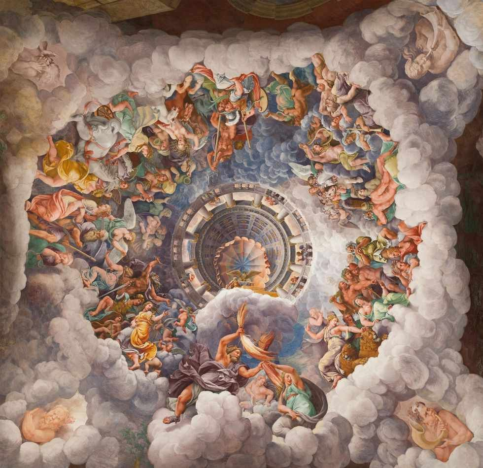

Pojęcia
Alegoria - środek stylistyczny pozwalający jedno pojęcie zastąpić innym, by przekazać moralną lub praktyczną naukę.
Antropologia - naukowe badania zgodne z teorią Darwina badające ewolucję człowieka, różne style życia, kultury
oraz społeczności na całej kuli ziemskiej.
Bóstwa astralne - zjawisko przemieniania się planet, ludzi lub bóstw w księżyc, gwiazdy, czy ślońce.
Chrześcijaństwo - religia świata wywodząca się z nauczania Jezusa Chrystusa,
syna Bożego, który przyszedł na ziemię; za swoje nauczanie cierpiał prześladowania i został ukrzyżowany, po czym powstał z martwych i wstąpił do nieba.
Czary - praktyki magiczne podporządkowujące siły przyrody przez użycie środków
nadprzyrodzonych, stanowiące, np., element religijnego rytuału.
Fetyszyzm - wiara w nadprzyrodzoną moc przedmiotu nieożywionego, fetysza, mającego znaczenie religijne lub magiczne.
Głowa - według niektórych kultur dusza
człowieka znajdowała się w głowie, dlatego jeśli ktoś chciał zdobyć duszę wroga, ścinał mu głowę.
Ideologia - zespół poglądów lub wierzeń, które ludzie wytworzyli na temat samych siebie, stanowiący podstawę zasad, jak postępować
w życiu.
Symbol falliczny - w społecznościach patriarchalnych o męskość się modlono, oddawano jej także cześć przy wykorzystaniu symboli w formie penisa.
Tabu - zakazy w ramach społeczności czy religii, ograniczające
pewne zachowania, np. kazirodztwo bądź bezczeszczenie świętych przedmiotów.
Teriomorficzny - bóg lub bóstwo pod postacią zwierzęcia, również ukazywany w rzeźbie lub malarstwie.
